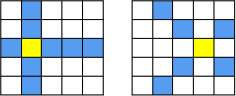

2차 배열
2차 배열 탐색¶
2차 배열에서 자주 사용하는 탐색 패턴들에 대해 연습해두자.
행우선 탐색¶

arr = [[ 1, 2, 3, 4, 5],
[ 6, 7, 8, 9, 10],
[11, 12, 13, 14, 15],
[16, 17, 18, 19, 20],
[21, 22, 23, 24, 25]]
N, M = len(arr), len(arr[0]) # N: 행크기, M: 열크기
for i in range(N):
for j in range(M):
print('%2d ' % arr[i][j], end='')
print()
열우선 탐색¶

arr = [[ 1, 6, 11, 16, 21],
[ 2, 7, 12, 17, 22],
[ 3, 8, 13, 18, 23],
[ 4, 9, 14, 19, 24],
[ 5, 10, 15, 20, 25]]
N, M = len(arr), len(arr[0])
for i in range(N):
for j in range(M):
print('%2d ' % arr[j][i], end='')
print()
지그재그 탐색¶

arr = [[ 1, 2, 3, 4, 5],
[10, 9, 8, 7, 6],
[11, 12, 13, 14, 15],
[20, 19, 18, 17, 16],
[21, 22, 23, 24, 25]]
N, M = len(arr), len(arr[0])
for i in range(N):
if i & 1 == 0: # 짝수행
for j in range(M):
print('%2d ' % arr[i][j], end='')
else: # 홀수행
for j in range(M - 1, -1, -1):
print('%2d ' % arr[i][j], end='')
print()
대각 탐색¶

- N = 행 크기, M = 열 크기
- 사선의 수 = N + M - 1, 즉, 사선의 시작 좌표가 N + M - 1 개 존재한다.
대각선의 시작 위치
- 처음 M개의 사선의 행값은 0 이고 열값은 1씩 증가한다.
- 나머지 사선들의 행값은 1부터 시작해서 1씩 증가하고, 열값은 M - 1 로 고정된다.
- 다음 예제는 우상단에서 좌하단으로 가는 대각 순회에 대한 예이다.
arr = [[ 1, 2, 4, 7, 11],
[ 3, 5, 8, 12, 15],
[ 6, 9, 13, 16, 18],
[10, 14, 17, 19, 20]]
N, M = len(arr), len(arr[0])
for diag in range(0, N + M - 1): # diag: 사선의 수
# x, y: 시작 좌표
x = 0 if diag < M else (diag - M + 1)
y = diag if diag < M else M - 1
while x < N and y >= 0: # 경계 체크
print('%2d ' % arr[x][y], end='')
x += 1
y -= 1
print()
대각선 또는 테두리 탐색¶

- 어떻게 할 수 있을지 생각해 봅시다.
사각 영역 탐색¶
- 5 X 5 배열에서 3 X 3 크기의 사각 영역을 탐색해보자.
- 가능한 모든 사각 영역들의 좌상단 좌표들에 대해서 작업을 수행한다.

- 가능한 모든 사각 영역들의 좌상단 좌표는 (0, 0) 에서 (N - M, N - M) 범위가 된다.
arr = [[ 1, 2, 3, 4, 5],
[ 6, 7, 8, 9, 10],
[11, 12, 13, 14, 15],
[16, 17, 18, 19, 20],
[21, 22, 23, 24, 25]]
N, M = len(arr), 3
for i in range(N - M + 1):
for j in range(N - M + 1):
for x in range(i, i + M): # 좌상단 (i, j)이고 크기가 M인 사각영역
for y in range(j, j + M):
print('%2d ' % arr[x][y], end='')
print()
print('-------------------')
기준점 탐색¶

- 첫번째는 기준점의 상하좌우 네 곳
- 두번째는 체스 게임의 Knight 가 현재 위치에서 이동할 수 있는 곳
- 그외, 다양한 문제에 활용이 가능
arr = [[ 1, 2, 3, 4],
[ 5, 6 , 7, 8],
[ 9, 10, 11, 12],
[13, 14, 15, 16]]
N = len(arr)
dx = [0, 0, 1, -1] # 우, 좌, 하, 상
dy = [1, -1, 0, 0]
for x in range(N): # x: 행, y: 열
for y in range(N):
for i in range(4):
tx, ty = x + dx[i], y + dy[i]
if tx < 0 or tx == N or ty == N or ty < 0: # 경계 체크
continue
print(arr[tx][ty], end=' ')
print()
기준점의 상하좌우로 계속 탐색¶

N = 5
arr = [[0] * N for _ in range(N)]
dx = [0, 0, 1, -1] # 우, 좌, 하, 상
dy = [1, -1, 0, 0]
x, y = 2, 1 # 기준점
arr[x][y] = 1
for i in range(4):
tx, ty = x + dx[i], y + dy[i]
while 0 <= tx < N and 0 <= ty < N:
arr[tx][ty] = 1
tx, ty = tx + dx[i], ty + dy[i]
for lst in arr:
print(*lst)